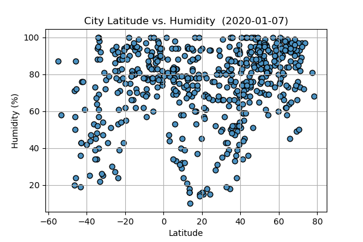

Fancy some plots?

Lat vs. Max Temp
It's pretty clear from this plot that the closer you get to the ecuator the hotter it gets. Interestingly...
Read more
Last updated 3 mins ago

Lat vs. Humidity
From this sample, there doesn't seem to be a strong correlation between humidity and...
Read more
Last updated 3 mins ago